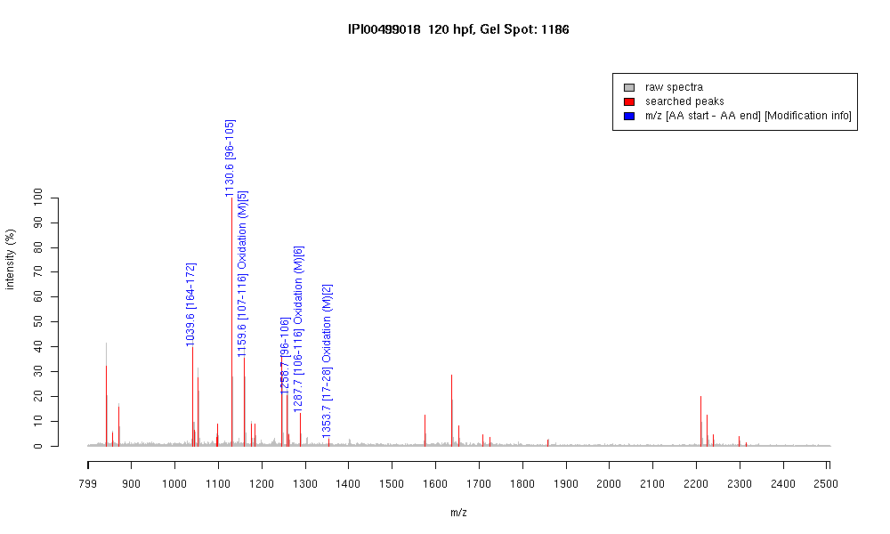

| Name | "PREDICTED: similar to tubulin, beta 3" |
|---|---|
| MW | 40088.8 |
| PI | 5.05 |
| Mascot Protein Score | 88 |
| Masses (matched / unmatched) | 6 / 32 |

| Peptide | MZ (calc) | MZ (observed) | Error (DA) | Error (PPM) | Start | Stop | Modifications |
|---|---|---|---|---|---|---|---|
| YLTVAGIFR | 1039.5935 | 1039.6053 | 0.0118 | 11 | 164 | 172 | |
| FPGQLNADLR | 1130.5953 | 1130.6117 | 0.0164 | 15 | 96 | 105 | |
| LAVNMVPFPR | 1159.6292 | 1159.6434 | 0.0142 | 12 | 107 | 116 | Oxidation (M)[5] |
| FPGQLNADLRK | 1258.6902 | 1258.6993 | 0.0091 | 7 | 96 | 106 | |
| KLAVNMVPFPR | 1287.7241 | 1287.7422 | 0.0181 | 14 | 106 | 116 | Oxidation (M)[6] |
| IMNSFSVMPSPK | 1353.6542 | 1353.6991 | 0.0449 | 33 | 17 | 28 | Oxidation (M)[2] |